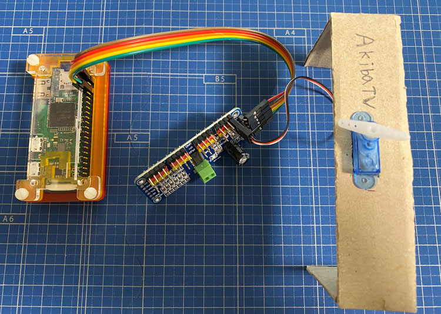
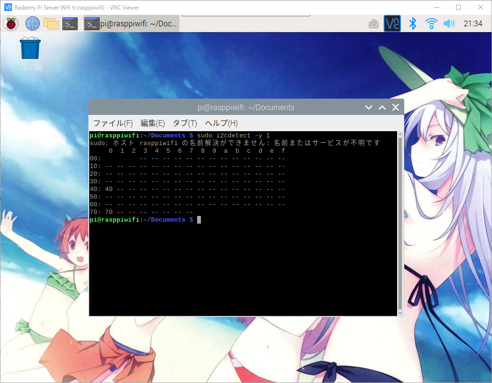
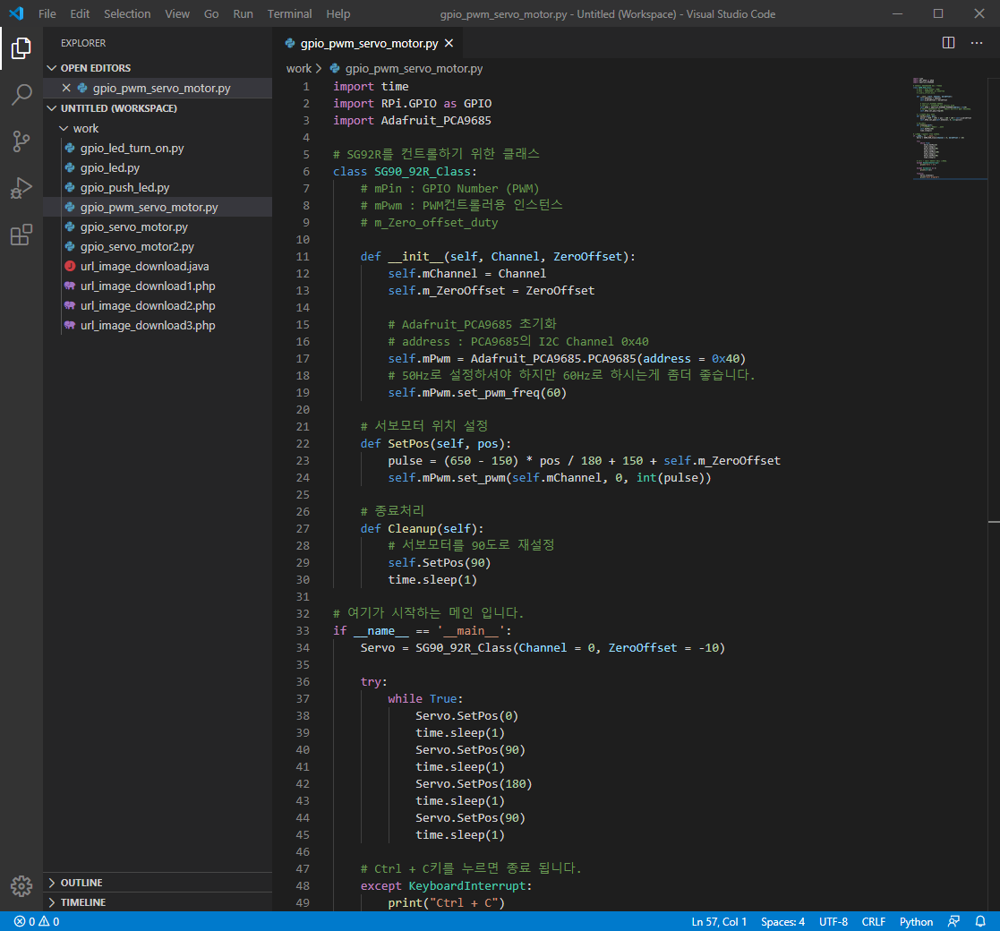
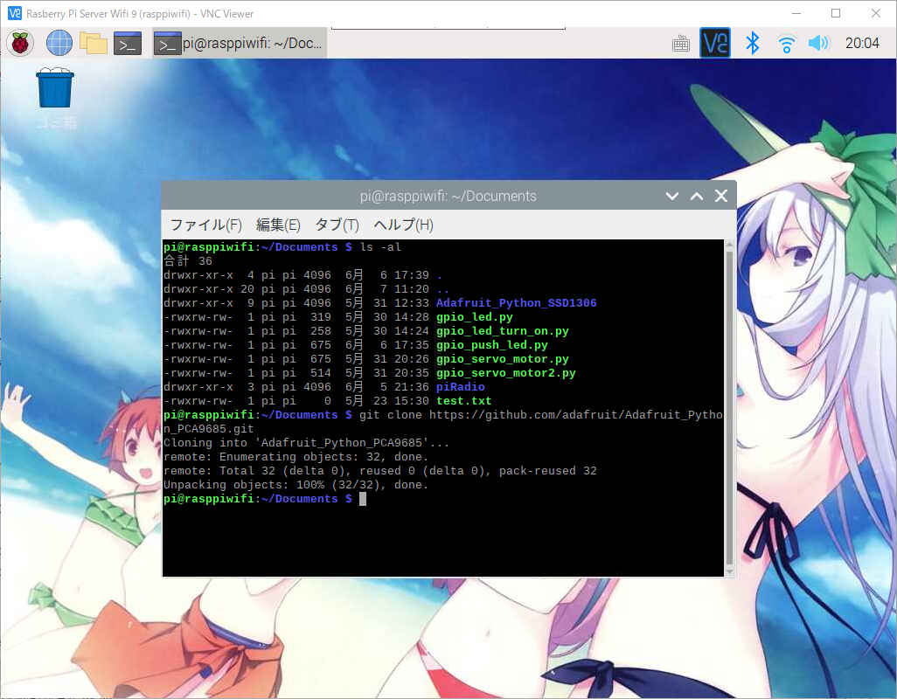
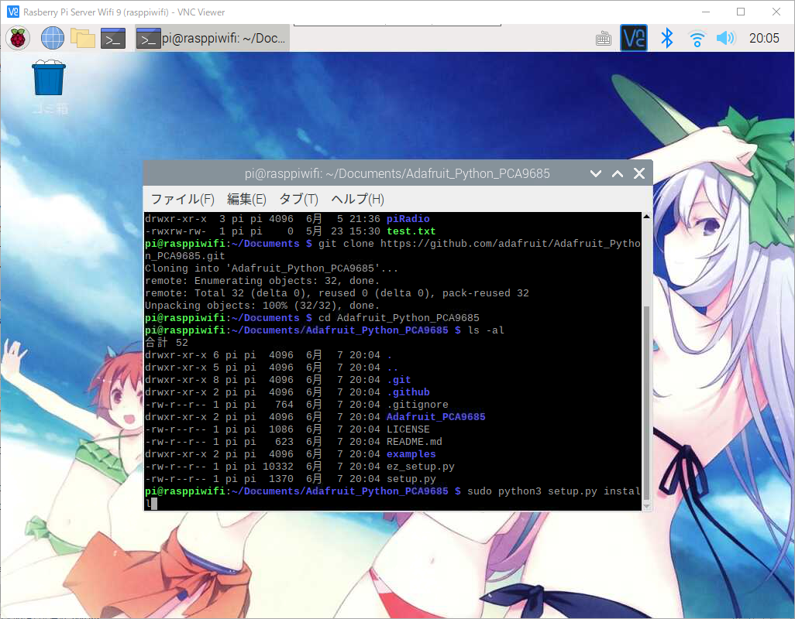
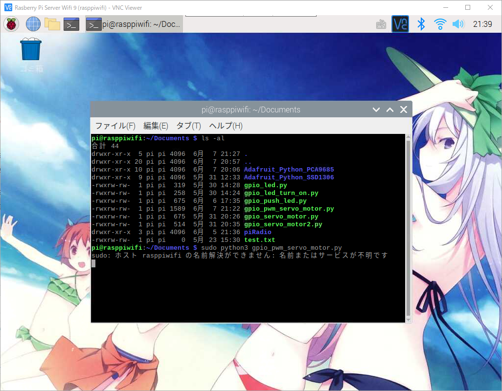

라즈베리파이에 GPIO Python PWM Servo Motor 제어하기
라즈베리파이에 GPIO Python PWM 컨트롤러로 Servo Motor 제어하기
안녕하세요.
이번에 소개할 내용은 라즈베리파이에서 GPIO Python PWM컨트롤러(PCA9685)로 Servo Motor 제어하기 입니다.
저번에 소개드린 라즈베리파이에 GPIO와 Python으로 Servo Motor 제어하기에 이어서
이번에는 PWM컨트롤러(PCA9685)를 이용해서 좀더 많은 모터와 보조전력을 공급하며
복잡한 구성의 모터를 제어할수 있게 해주는 컨트롤러 입니다.
PWM컨트롤러(PCA9685)는 2개에 999엔정도에 구매가 가능 합니다.
일단 PWM컨트롤러(PCA9685)를 이용해서 서보모터 제어를 하기 위해선 준비물이 기존보다 조금더 많이 필요 하겠습니다.
준비물
- 라즈베리파이 본체 OS설치와 Python설치가 끝난 상태
- Servo Motor(서보모터)
- PWM컨트롤러(PCA9685)
- 점퍼케이블 암컷으로 5줄
이렇게 준비물이 갖춰져 있는지 확인 하시고 PWM컨트롤러(PCA9685)로 Servo Motor(서보모터) 제어하기를 하겠습니다.

점퍼케이블 5줄에 대해서 PWM컨트롤러(PCA9685)와 다음과 같이 연결을 해주시기 바랍니다.
| Color | Pi GPIO Pin | Notes | PCA9685 |
|---|---|---|---|
| Red | 2 | 5V | V+ |
| Brown | 1 | 3.3V | VCC |
| Orange | 3 | 2(I2C1_SDA1) | SDA |
| Yellow | 5 | 3(I2C1_SCL1) | SCL |
| Green | 6 | GND | GND |
라즈베리파이와 점퍼케이블 서보모터를 전부 연결을 하셨으면
우선 코딩을 해보도록 하겠습니다.
이번에도 오픈소스를 이용해 PWM컨트롤러 제어 소스를 참고해 만들어 보았습니다.
Visual Studio Code(비주얼 스튜디오 코드)를 실행해 주시기 바랍니다.
코딩에 들어가기에 앞서 VNC로 라즈베리파이에 접속후 터미널을 실행해 주세요.
아래의 명령어로 I2C연결된 위치를 확인 합니다.
1 | $ sudo i2cdetect -y 1 |

위에 보듯이 PWM컨트롤러(PCA9685)의 I2C는 0x40과 0x70이라는 채널에 연결되어 있음을 알수 있습니다.
코드를 작성할때는 0x40 채널을 이용해서 작성을 하도록 하겠습니다.
그리고 파일명은 gpio_pwm_servo_motor.py 로 추가해 주시기 바랍니다.
아래의 코드를 작성해 주시기 바랍니다.
1 | import time |

코드 작성이 끝나셨으면 VNC로 라즈베리파이에 접속후 터미널을 실행해 주세요.
PWM컨트롤러를 제어할 오픈소스를 깃허브에서 다운로드 받은후 설치를 하도록 하겠습니다.
오픈소스를 다운받기 위해 적당한 위치로 이동을 하신후 아래의 명령어를 차례대로 입력해 주세요.
1 | $ git clone https://github.com/adafruit/Adafruit_Python_PCA9685.git |

깃허브에서 소스를 다운로드가 시작되며 정상적으로 다운로드가 완료 되었습니다.

다운로드한 소스폴더로 이동을 합니다.

소스파일이 설치가 완료 되면 작성하신 소스코드를 실행을 위해 작성하신 소스코드 폴더로 이동해 주세요.
아래의 명령으로 gpio_pwm_servo_motor.py를 실행하도록 하겠습니다.
1 | # 파이썬을 2.x버전대이신 분은 아래의 명령어를 입력해 주세요. |

실행을 하시면 서보모터가 움직이는것을 확인 하실수 있습니다.
프로그램을 종료를 하실려면 Ctrl + C키를 누르면 종료 됩니다.